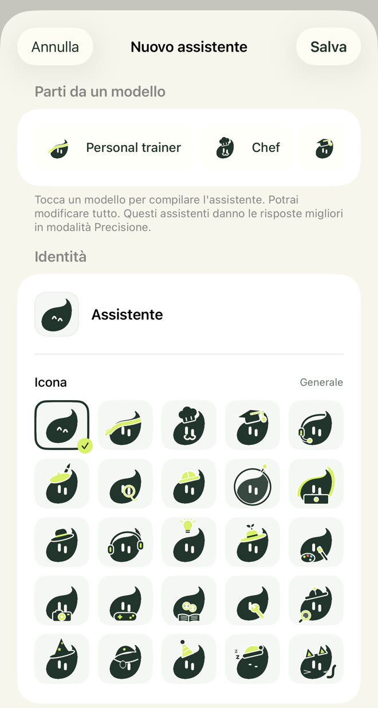
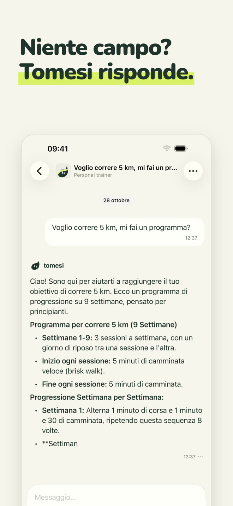
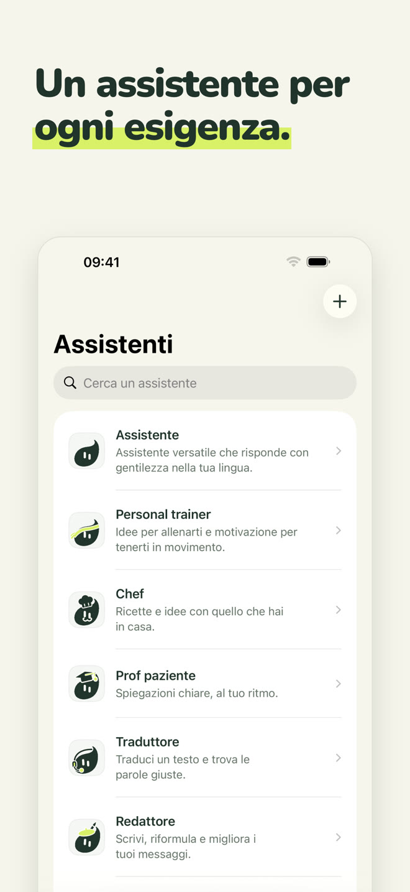
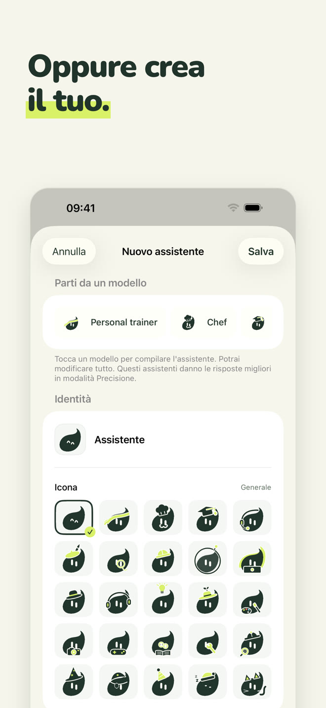
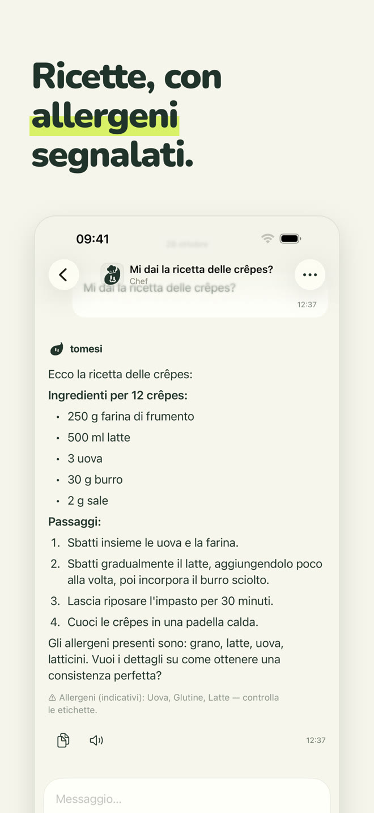
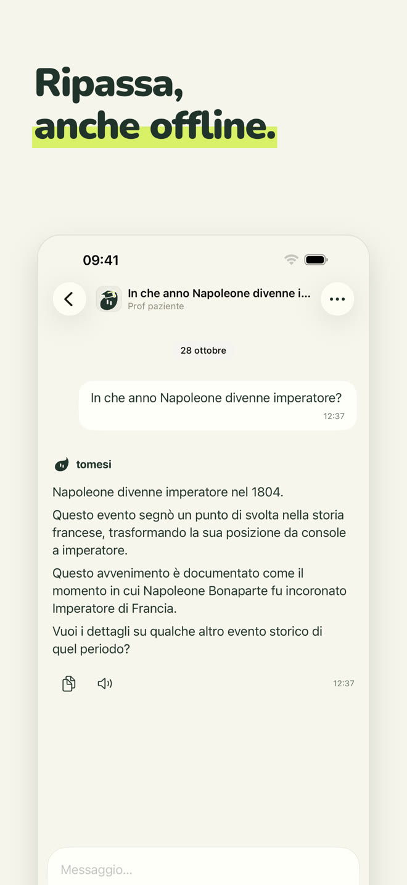
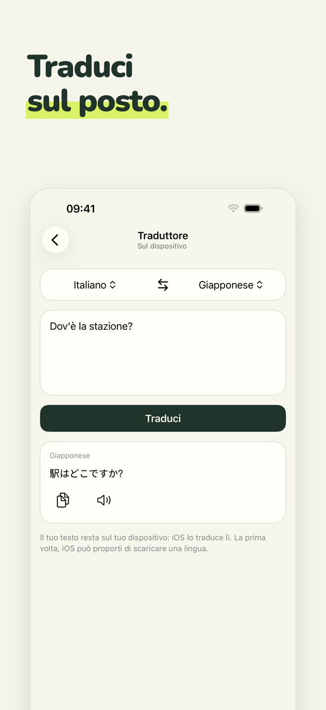
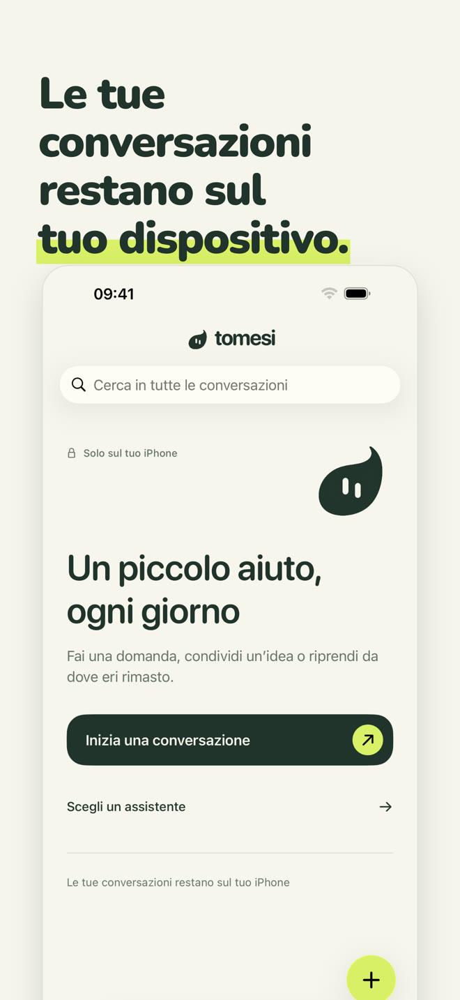

Un assistente IA 100% locale: funziona sul tuo iPhone, in aereo, in montagna, all'estero. Quello che scrivi non lascia mai il telefono.
Scarica dall'App StoreAcquisto unico · senza account · senza abbonamento
Ogni assistente ha il suo ruolo e il suo modo di rispondere. Scegli quello che ti aiuta, o parla semplicemente con l'assistente tuttofare.
Tuttofare, risponde con gentilezza nella tua lingua.
Allenamenti adatti al tuo tempo e alla tua attrezzatura, programmi settimana per settimana.
Ricette semplici con quello che hai, allergeni segnalati.
Spiega passo dopo passo, al tuo ritmo: matematica, storia, scienze, grammatica.
Traduci un testo tra 13 lingue, sul posto.
Email, messaggi, lettere; e l'ortografia corretta errore per errore.
Dagli un nome, una personalità e uno dei 25 pittogrammi di Tomesi: un assistente a tua immagine, che usa anche le schede dell'app.

Un modello piccolo non può sapere tutto. Tomesi porta con sé schede riviste e le dà all'assistente quando risponde.
Quantità, passaggi e allergeni, mostrati dall'app sotto la risposta.
14 paesi, più schede di scienze, geografia e grammatica in 14 lingue.
E 65 schede: programmi di più settimane, recupero, alimentazione, sport.
Come ogni IA, Tomesi può sbagliare: verifica le informazioni importanti.







L'IA è installata sul tuo iPhone. Quello che scrivi non viene mai inviato su internet né salvato altrove.
Nessuna registrazione, nessuna email, nessuna pubblicità, nessun dato raccolto.
Nessun server da pagare, quindi nessun abbonamento: l'app è tua.
La modalità Precisione, facoltativa, scarica un modello più potente (circa 3 GB) per le risposte che richiedono più finezza.
Sì. Una volta installati l'app e il suo assistente, Tomesi non ha più bisogno di internet: l'IA funziona interamente sul tuo iPhone. Puoi verificarlo attivando la modalità aereo.
Da nessuna parte. Restano sul tuo telefono. Tomesi non ha server di conversazione, né account utente, né pubblicità. Vedi la nostra informativa sulla privacy.
ChatGPT vive sui server: serve una connessione e le tue conversazioni passano di lì. Tomesi vive sul tuo iPhone: meno enciclopedico di un gigante del cloud, ma sempre disponibile, totalmente privato e senza abbonamento.
Un iPhone con 8 GB di memoria (iPhone 15 Pro o successivo) con iOS 26 o successivo. Prevedi circa 3 GB liberi, più 3 GB per la modalità Precisione, facoltativa.
Sì, come ogni IA. Le ricette, le date di storia e le schede dell'app sono verificate e date all'assistente, il che riduce molto gli errori, ma verifica sempre le informazioni importanti.
Tomesi è tradotto in 13 lingue (italiano, inglese, francese, tedesco, spagnolo, olandese, polacco, portoghese, giapponese, coreano, cinese semplificato, russo…) e l'assistente capisce e risponde in ancora più lingue.
Sì. MonIA ora si chiama Tomesi. Se l'hai già acquistata, non devi ricomprarla: basta aggiornare, e le tue conversazioni restano sul telefono.